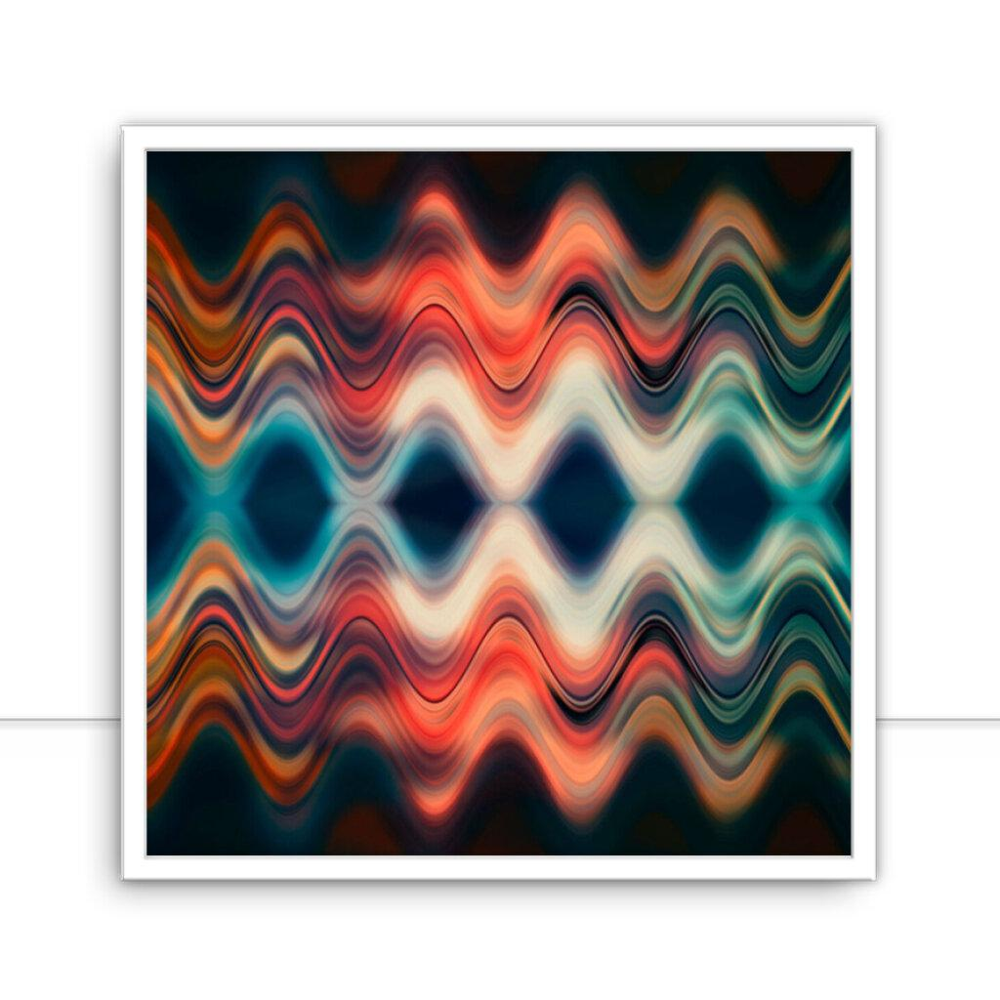

CSS: Background | Questão:8765
Esticando a imagem
Crie uma classe que exibe uma imagem de fundo
Essa imagem precisa se esticar para caber no elemento
Sem perder suas dimensões.
Nas partes que a imagem não ocupar, a cor #d9d9d9 deve ser exibida
